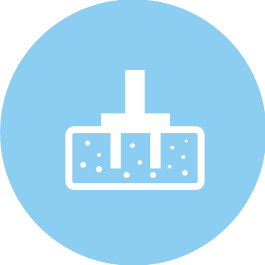
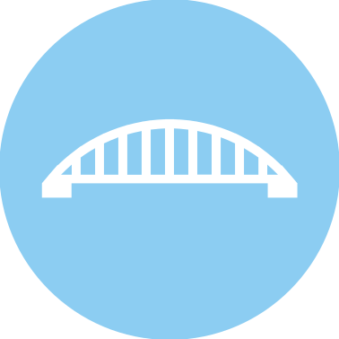

Certezza di risultato nel campo
strutturale e geotecnico dal 1988

Certezza di risultato nel campo
strutturale e geotecnico dal 1988

Certezza di risultato nel campo
strutturale e geotecnico dal 1988
Certezza di risultato nel campo
strutturale e geotecnico dal 1988
Certezza di risultato nel campo
strutturale e geotecnico dal 1988
Certezza di risultato nel campo
strutturale e geotecnico dal 1988
Un'esperienza lunga più di 30 anni, nel quale abbiamo maturato competenze molteplici nell'ambito dell'ingegneria civile.
Un viaggio pieno di successi che ci sono stati riconosciuti da reti televisive, testate giornalistiche e commissioni o collaborazioni con alcune delle seguenti aziende.


Tutti i momenti della preparazione alla demolizione con micro cariche del viadotto di cinque campate per un totale di 250 metri.
Riprese video con l’ausilio di 7 videocamere posizionate.
Copyright Nonexplo Italia srl - Fabriano (An) Italy
Riprese e Montaggio Dedalo srl - Fabriano (An) Italy
Video and description by
Non-Explo Italia srl (YouTube Channel)
Consulenza tecnica e supporto a professionisti amministrazioni, imprese e condomini.

Strutture

Geotecnica

Architettura
Indagini e verifiche di vulnerabilità sismica di struttre ed edifici pubblici e privati.
Consulenza gratuita per pratiche.

Infrastrutture
viarie

Trattamento
acque
Indagini
strutturali
L'esperienza maturata nel settore dell'ingegneria civile negli anni, ci ha conferito una grande competenza nel campo strutturale , antisismico, geotecnico, demolizioni controllate, infrastrutture idrauliche, impianti di depurazione e trattamento acque, strutture viarie e di contenimento, nonché un notevole sviluppo nel campo della topografia 3D e nella modellazione solida nell'architettura e nel rendering con molteplici applicazione nel recupero edilizio ed urbano.
La struttura di progettazione dispone di sofisticate attrezzature, quale georadar, laserscan a breve e lunga distanza, strumentazione GPS e stazioni totali robotizzate, strumentazioni per indagini strutturali e per la determinazione del potenziale di corrosione della armature metalliche del calcestruzzo e della sua resistività, pacometri digitali, termocamere per uso strutturale ed energetico, carotatrici e sistemi di monitoraggio strutturale e topografico di altissima precisione.
Tutto ciò ci rende completamente autonomi e speditivi nell'assolvimento dei servizi di ingegneria richiesti dal committente.
La struttura operativa è composta da professionisti di maturata esperienza e di giovani risorse molto motivate.
Ingegnere civile
UNICAL
2006
Libero Professionista
Geometra
ITG "E.Santoni" (KR)
1994
Libero Professionista
Geologo
Collaboratore a progetto
Architetto
Collaboratore a progetto
Geologo Junior
UNICAL
2017
Consuelente e collaboratore